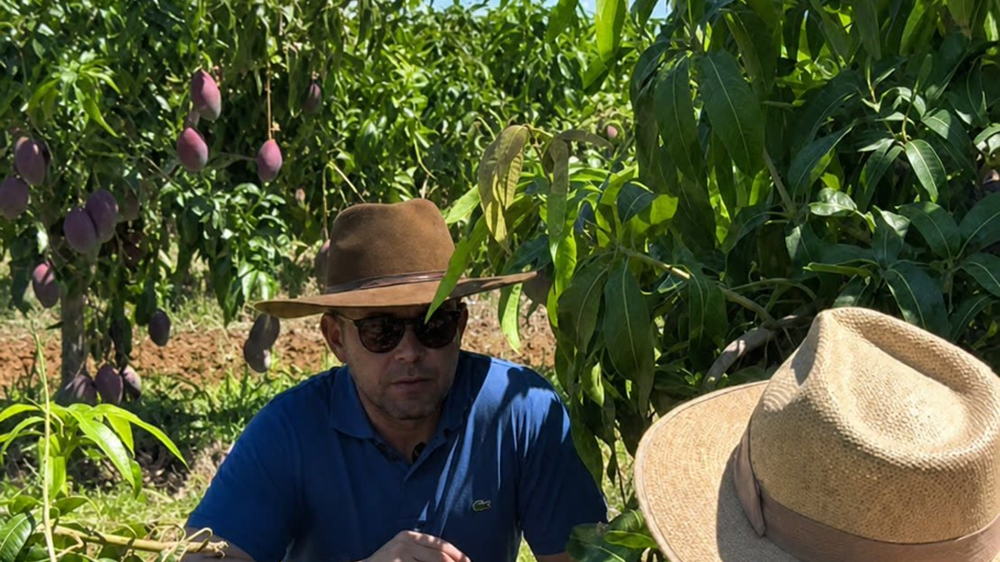

MP 1.376 • 29/08/2026
Banco do Brasil inicia renegociação pela MP 1.376
Atenção ao reforço de garantias, alienação fiduciária e eventual proposta de renegociação comercial.
Conteúdo técnico para o produtor que precisa compreender contratos, prorrogação, renegociação, execução e riscos sobre a continuidade da atividade.
Informação jurídica aplicada à rotina do produtor, com leitura técnica da operação bancária, das garantias e da capacidade de pagamento.

Atenção ao reforço de garantias, alienação fiduciária e eventual proposta de renegociação comercial.
O que organizar e comparar antes de aceitar uma nova operação bancária.
O que muda com a Resolução CMN 5.334/2026 e o que conferir antes de contratar.
Providências, documentos e riscos antes do agravamento da cobrança.
Requisitos, prova e capacidade futura de pagamento.
Como revisar a negativa, o enquadramento e os documentos apresentados.
Organização técnica da operação, das perdas e da capacidade futura.
Como juros, garantias e natureza da obrigação podem mudar.
Fundamentos, documentação e cuidados antes de renegociar.
Juros, CET, garantias, confissão e encadeamento de operações.
Defesa, garantias, atos de cobrança e risco patrimonial.
Advogado, técnico agrícola em fruticultura e produtor rural.